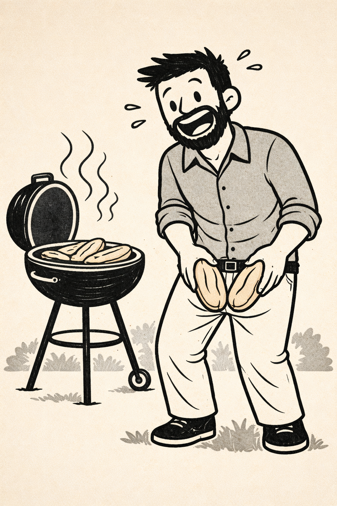

Vergüenza como motor del mundo
Nunca he sido uno de esos tíos que se sacan el pene en las barbacoas masculinas, lo meten en un pan de perrito y preguntan: «¿Quieres?». Siempre me he considerado más bien pudoroso.
En los vestuarios intento estar desnudo el menor tiempo posible. Sin embargo, eso es otra de las cosas que han cambiado desde que tengo hijos.
Mientras le pongo la ropa a Nico después de la piscina, sale corriendo y tengo que perseguirlo en bolas por todo el vestuario. Verte obligado a hacer eso con cierta frecuencia es una terapia de choque bastante eficaz.
Nunca he entendido la falta absoluta de pudor. ¿Hay algo más triste que un pene flácido? Escuché a una cómica decir que, para enseñar a los ciegos qué es la tristeza, les hacen palpar la flacidez. Así se entiende todo.
De pequeño, cuando entré en la etapa de las bromas sobre penes, no entendía por qué el tamaño era el leitmotiv de todas esas chanzas. Una vez le pregunté a «un mayor» por qué era algo positivo un gran tamaño. «Solo sirve para que te hagan más daño los pelotazos», esgrimía mi yo de ocho años.
Para quitarse la pregunta de encima, me respondió que a mayor longitud, más hijos se podían tener.
Y ahora me doy cuenta de que tener tres hijos ha sido una manera un tanto excéntrica y subliminal de reafirmar mi masculinidad. Y no es broma. Porque la vergüenza es el motor del mundo.
Todos nuestros objetivos, metas y esfuerzos se basan en construir una identidad que no nos avergüence. La vida es un camino angosto (septiembre, octubre…) por el que deambulamos intentando minimizar ese odio a nosotros mismos que todos arrastramos. Y ahí la vergüenza juega un papel esencial.
Creamos identidades que reducen nuestra propia vergüenza y nos permiten sentir vergüenza ajena hacia quienes no actúan como nosotros. La vergüenza ajena no es otra cosa que un sentimiento de superioridad, una forma de despreciar los proyectos vitales de los demás en contraposición a los nuestros.
De modo que sí, somos esclavos de nosotros mismos. Quizá por eso la edad, a menudo, nos vuelve difíciles de tratar: porque la vergüenza nos convierte en caricaturas de nosotros mismos que sólo pueden retroalimentarse.
Y sí, pienso todo esto mirándome al espejo del vestuario, mientras me peino en bolas. Porque el pudor ya no está entre mis cualidades.
